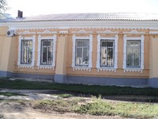
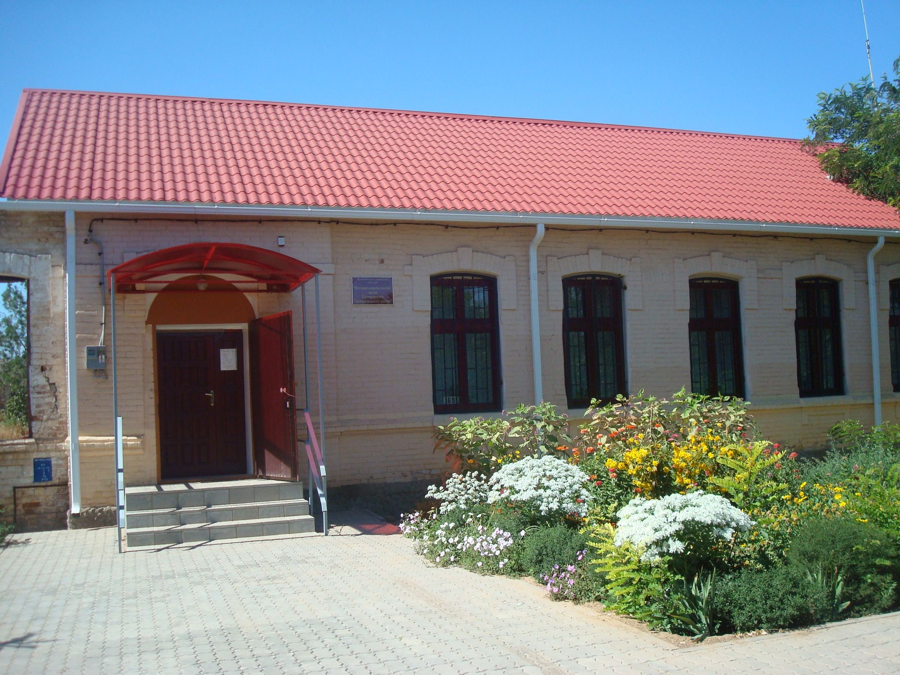
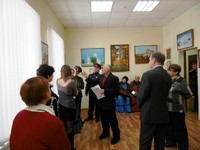

Краеведческий музей — является местом, где собран богатейший материал по истории района. С 2011 года музей располагается в старинном здании конца XIX-XX начала в.в., предположительно, доме купца Комарова. Фондовое собрание насчитывает более 1500 предметов.

Краеведческий музей
Описание
Музейный фонд
Особый интерес представляют экспонаты палеонтологии - берцовые кости шерстистого носорога, найденные в г. Новоаннинском,
во дворе домовладения при рытье колодца.
В археологической коллекции находятся предметы из древних захоронений: скелет будина, ткани, изделия из глины,
бронзы, железа, камня.
Коллекция археологии и палеонтологии представлена находками из сарматских захоронений разных эпох.
Собрание этнографии представлено подлинными предметами жизни и быта. Среди экспонатов - кованый сундук, подаренный
казаку Ястребову русским императором в 1890 году за героизм и мужество.
Представляют интерес экспонаты времен Гражданской войны: телефонный аппарат, которым пользовался начальник
шестнадцатой дивизии Красной Армии В.И.Киквидзе на станции Филоново и телеграфный аппарат Морзе, по которому
была передана телеграмма народного комиссара Н.И.Подвойского В.И.Ленину.
В экспозициях музея, посвященных Великой Отечественной войне, отражены вклад новоаннинцев в победу, роль района в битве под Сталинградом.
Фотографии
  
Расположение
 )
)
Расположение Краеведческого музея на интерактивной карте
Краеведческий музей находится в городе Новоаннинский - пер.К.Либкнехта, дом. №3, расположение указано на карте.
Дополнительная информация
Режим работы мезея - пн, ср, пт с 10.00 до 16.00.